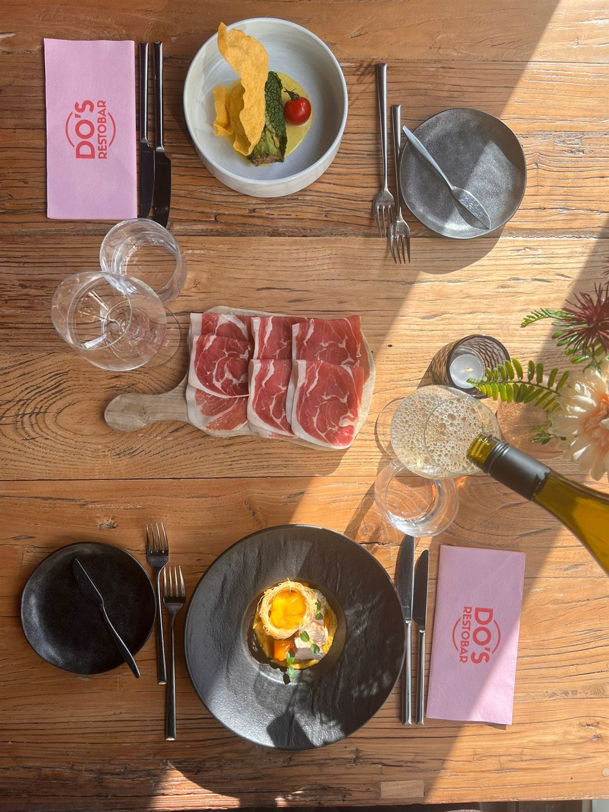
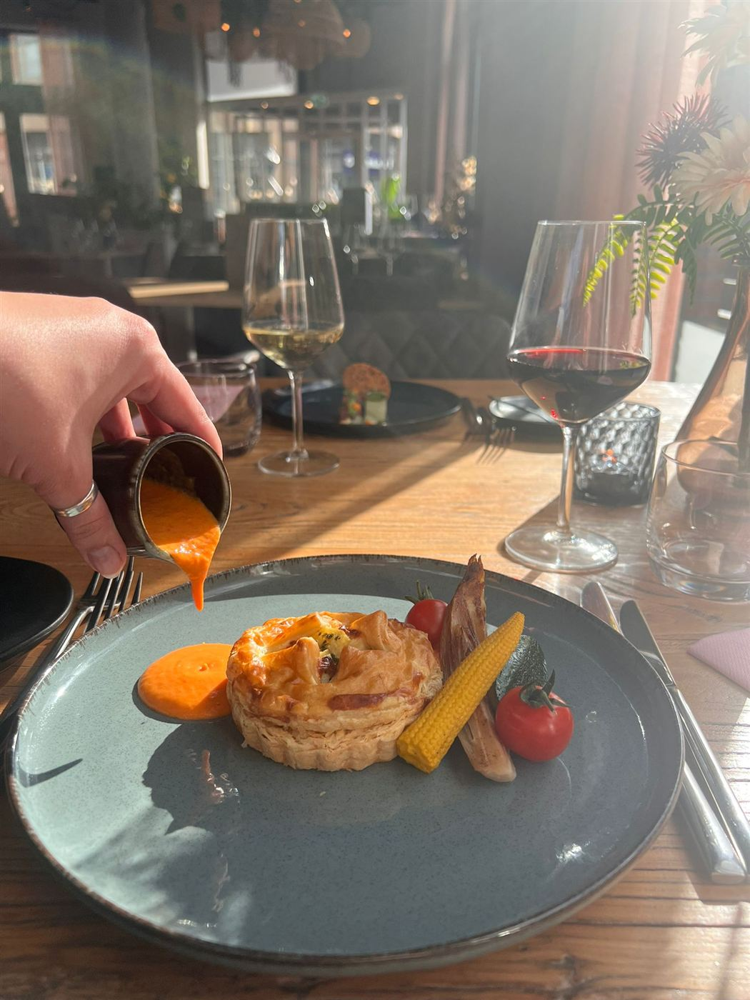
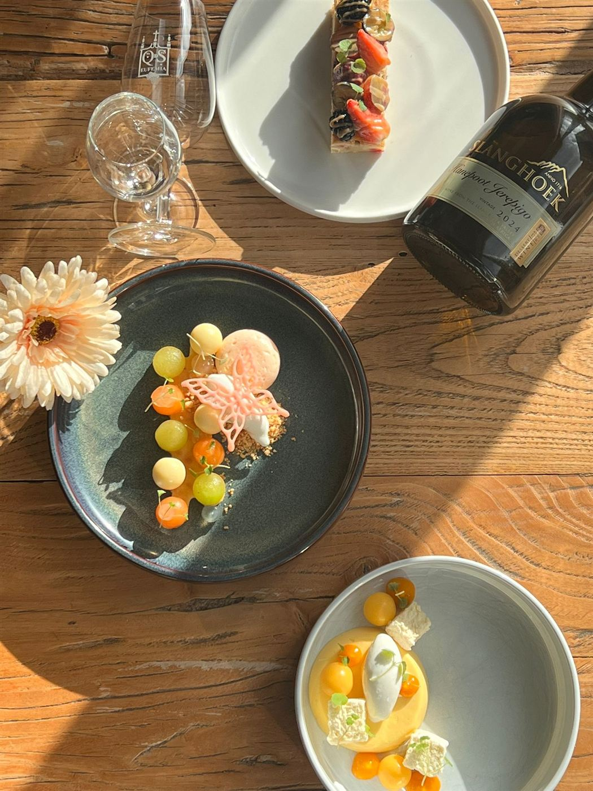

Keuzemenu voor gezelschappen
Vanaf 12 personen
Stel zelf een menu van 3, 4 of 5 gangen samen uit onze à-la-cartekaart.
Hoeveel gerechten je kiest
| Groep | Voor | Hoofd | Dessert |
|---|---|---|---|
| 12-20 personen | 4 | 4 | 4 |
| 20-30 personen | 3 | 3 | 3 |
| 30-40 personen | 3 | 3 | 2 |

Restobar aan de Brouwersgracht, Veenendaal
Hier komen wijn en spijs samen. Een kaart van verrassende smaakcombinaties tot klassiekers met een moderne twist, en een sommelier die bij elk gerecht het juiste glas zoekt.
Donderdag tot en met zondag, vanaf 17.00 uur
Bij Do's Restobar komen de kwaliteit en finesse van wijn en spijs samen. We bieden een toegankelijke maar stijlvolle culinaire ervaring, in een warme, sfeervolle ambiance.
Onze kaart gaat van verrassende smaakcombinaties tot klassiekers met een moderne twist. Wat ons echt onderscheidt, zijn de spannende wijn-spijscombinaties: onze sommelier zorgt ervoor dat elk gerecht nog beter tot zijn recht komt met de perfecte bijpassende wijn.
Of je nu op zoek bent naar een romantisch diner of een gezellige avond met vrienden: wij bieden een gastvrije en smakelijke ervaring, altijd met oog voor detail.

Van een rustieke bol om te delen tot het verrassingsmenu van de keuken. Allergie of dieetwens? Laat het ons weten, dan houden we er rekening mee.
Laat de keuken kiezen. Vraag gerust naar het bijpassende wijnarrangement.

Per glas of per fles, van de huiswijn tot de kelderjuwelen. Topwijnen schenken we ook per glas uit de Coravin. De kaart wisselt; vraag gerust naar wat er nu open is.
| Wijn | Glas | Fles |
|---|---|---|
| Corte Molino, pinot grigioItalië | 6 | 30 |
| Yuntero, verdejoSpanje | 6,25 | 31,5 |
| A. de Joyeuse, chardonnayFrankrijk | 6,5 | 32,5 |
| D. Chezzeles, sauvignon blancFrankrijk | 6,5 | 32,5 |
| Caves da Villa, ArintoPortugal, alcoholvrij | 6,5 | 32,5 |
| La Sanglière, grenache-cinsault | 6,5 | 32,5 |
| Wijn | Glas | Fles |
|---|---|---|
| Camas, merlotFrankrijk | 6 | 30 |
| Yuntero, tempranillo | 6,25 | 31,5 |
| A. de Joyeuse, malbec | 6,5 | 32,5 |
| Angiuli, primitivo | 6,75 | 35 |
| Epicure, corvinaalcoholvrij | 6,5 | 32,5 |
| Wijn | Glas | Fles |
|---|---|---|
| D. Angiuli "Maccone", negroamaro bianco | 9 | 42,5 |
| Ch. Gaillard, Mâcon chardonnay2024 | 9,5 | 45 |
| Wijn | Glas | Fles |
|---|---|---|
| D. de Leyre Loup, gamayFleurie | 9 | 42,5 |
| M. Gondi, Chianti Rufina2022 | 9,5 | 45 |
| Monte dos Perdigões, gouveio & viognier | 37,5 |
| Weingut am Berg, grüner veltliner | 37,5 |
| Crowded House, sauvignon blancNieuw-Zeeland | 39,5 |
| Zonneweelde, chenin blanc | 45 |
| Las Levantas, tempranillo blanco | 47,5 |
| Shortbread, chardonnayVerenigde Staten | 50 |
| D. Gaillard, Pouilly-Fuissé 1er2020 | 70 |
| Weingut am Berg, zweigelt | 37,5 |
| Monte dos Perdigões | 37,5 |
| Loriñón, Crianza2020 | 39,5 |
| Gladiator, zinfandel | 42,5 |
| Ch. Tour de Pressac, Saint-Émilion2022 | 57,5 |
| Bonnard, Auxey-Duresses 1er2020 | 65 |
| C. Ballarin, Barolo2019 | 70 |
| P. Zardini, Amarone2016 | 70 |
| Blondeau Danne, Saint-Aubin 1er cru2019 | 70 |
| Semaska, Condrieu Lys d'Or2002 | 100 |
| Blondeau Danne, Chassagne-Montrachet 1er cru2019 | 125 |
| Blondeau Danne, Saint-Aubin pinot noir2019 | 70 |
| D. l'Abbé Dîne, Châteauneuf-du-Pape2018 | 75 |
| Decelle Villa, Gevrey-Chambertin2014 | 80 |
| Mocali, Brunello di Montalcino2013 | 90 |
| Ch. La Marzelle, Grand Cru Classé2012 | 115 |
| Finca Romda, Gran Rodma2020 | 125 |
| Ch. La Dominique, Grand Cru Classé2020 | 150 |
Iets te vieren of met collega's uit eten? Kies zelf uit onze kaart, of laat je verrassen met een walking dinner.
Vanaf 12 personen
Stel zelf een menu van 3, 4 of 5 gangen samen uit onze à-la-cartekaart.
| Groep | Voor | Hoofd | Dessert |
|---|---|---|---|
| 12-20 personen | 4 | 4 | 4 |
| 20-30 personen | 3 | 3 | 3 |
| 30-40 personen | 3 | 3 | 2 |
Vanaf 30 personen
Laat je verrassen door een culinaire reis in meerdere gangen. Creatief, met het seizoen, lokaal en duurzaam: kleine porties in een informele sfeer.
Vraag een groepsdiner aanReserveren kan online, of bel of mail ons gerust. We zijn open van donderdag tot en met zondag, vanaf 17.00 uur.
Dit is een voorbeeld: op de echte site komt hier jullie eigen Guestplan-reserveringsknop.
Brouwersgracht 168
3901 TM Veenendaal